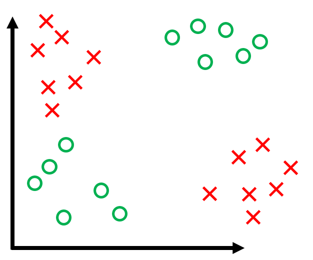

Lecture 3: The Perceptron
Assumptions
- Binary classification (i.e. $y_i \in \{-1, +1\}$)
- Data is linearly separable
Classifier
$$
h(x_i) = \textrm{sign}(\vec{w} \cdot \vec{x_i} + b)
$$
$b$ is the bias term (without the bias term, the hyperplane that $\vec{w}$ defines would always have to go through the origin).
Dealing with $b$ can be a pain, so we 'absorb' it into the feature vector $\vec{w}$ by adding one additional constant dimension.
Under this convention,
$$
\vec{x_i} \hspace{0.1in} \text{becomes} \hspace{0.1in} \begin{bmatrix} \vec{x_i} \\ 1 \end{bmatrix} \\
\vec{w} \hspace{0.1in} \text{becomes} \hspace{0.1in} \begin{bmatrix} \vec{w} \\ b \end{bmatrix} \\
$$
We can verify that
$$
\begin{bmatrix} \vec{x_i} \\ 1 \end{bmatrix} \cdot \begin{bmatrix} \vec{w} \\ b \end{bmatrix} = \vec{w} \cdot \vec{x_i} + b
$$
Using this, we can simplify the above formulation of $h(x_i)$ to
$$
h(x_i) = \textrm{sign}(\vec{w} \cdot \vec{x})
$$
Observation: Note that
$$
y_i(\vec{w} \cdot \vec{x_i}) > 0 \Longleftrightarrow x_i \hspace{0.1in} \text{is classified correctly}
$$
where 'classified correctly' means that $x_i$ is on the correct side of the hyperplane defined by $\vec{w}$.
Also, note that the left side depends on $y_i \in \{-1, +1\}$ (it wouldn't work if, for example $y_i \in \{0, +1\}$).
Perceptron Algorithm
Now that we know what the $\vec{w}$ is supposed to do (defining a hyperplane the separates the data), let's look at how we can get such $\vec{w}$.
Perceptron Algorithm
Geometric Intuition
Quiz#1: Can you draw a visualization of a Perceptron update?
Quiz#2: How often can a Perceptron misclassify a point $\vec{x}$ repeatedly?
Perceptron Convergence
Suppose that $\exists \vec{w}^*$ such that $y_i(\vec{w}^* \cdot \vec{x}) > 0 $ $\forall (\vec{x}_i, y_i) \in D$.
Now, suppose that we rescale each data point and the $\vec{w}^*$ such that
$$
||\vec{w}^*|| = 1 \hspace{0.3in} \text{and} \hspace{0.3in} ||\vec{x_i}|| \le 1 \hspace{0.1in} \forall \vec{x_i} \in D
$$
The Margin of a hyperplane, $\gamma$, is defined as
$$
\gamma = \min_{(\vec{x_i}, y_i) \in D}|\vec{w}^* \cdot \vec{x_i} |
$$
We can visualize this as follows
- All inputs $\vec{x_i}$ live within the unit sphere
- $\gamma$ is the distance from the hyperplane (blue) to the closest data point
- $\vec{w}^*$ lies on the unit sphere
Theorem: If all of the above holds, then the perceptron algorithm makes at most $1 / \gamma^2$ mistakes.
Proof:
Keeping what we defined above, consider the effect of an update ($\vec{w}$ becomes $\vec{w}+y\vec{x}$) on the two terms $\vec{w} \cdot \vec{w}^*$ and $\vec{w} \cdot \vec{w}$.
We will use two facts:
- $y( \vec{x}\cdot \vec{w})\leq 0$: This holds because $\vec x$ is misclassified by $\vec{w}$ - otherwise we wouldn't make the update.
- $y( \vec{x}\cdot \vec{w}^*)>0$: This holds because $\vec{w}^*$ is a separating hyper-plane and classifies all points correctly.
-
Consider the effect of an update on $\vec{w} \cdot \vec{w}^*$:
$$
(\vec{w} + y\vec{x}) \cdot \vec{w}^* = \vec{w} \cdot \vec{w}^* + y(\vec{x}\cdot \vec{w}^*) \ge \vec{w} \cdot \vec{w}^* + \gamma
$$
The inequality follows from the fact that, for $\vec{w}^*$, the distance from the hyperplane defined by $\vec{w}^*$ to $\vec{x}$ must be at least $\gamma$ (i.e. $y (\vec{x}\cdot \vec{w}^*)=|\vec{x}\cdot\vec{w}^*|\geq \gamma$).
This means that for each update, $\vec{w} \cdot \vec{w}^*$ grows by at least $\gamma$.
-
Consider the effect of an update on $\vec{w} \cdot \vec{w}$:
$$
(\vec{w} + y\vec{x})\cdot (\vec{w} + y\vec{x}) = \vec{w} \cdot \vec{w} + 2y(\vec{w} \cdot\vec{x}) + y^2(\vec{x}\cdot \vec{x}) \le \vec{w} \cdot \vec{w} + 1
$$
The inequality follows from the fact that
- $2y(\vec{w}\cdot \vec{x}) < 0$ as we had to make an update, meaning $\vec{x}$ was misclassified
- $y^2(\vec{x} \cdot \vec{x}) \le 1$ as $y^2 = 1$ and all $\vec{x}\cdot \vec{x}\leq 1$ (because $\|\vec x\|\leq 1$).
This means that for each update, $\vec{w} \cdot \vec{w}$ grows by at most 1.
-
Now we can put together the above findings. Suppose we had $M$ updates.
\begin{align}
M\gamma &\le \vec{w}\cdot\vec{w}^* &&\text{By (1)} \\
&= |\vec{w}\cdot\vec{w}^*| &&\text{By (1) again (the dot-product must be non-negative because the initialization is 0 and each update increases it by at least $\gamma$)} \\
&\le ||\vec{w}||\ ||\vec{w}^*|| &&\text{By Cauchy-Schwartz inequality} \\
&= ||\vec{w}|| &&\text{As $||\vec{w}^*|| = 1$} \\
&= \sqrt{\vec{w} \cdot \vec{w}} && \text{by definition of $\|\vec{w}\|$} \\
&\le \sqrt{M} &&\text{By (2)} \\
&\Rightarrow M\gamma \le \sqrt{M} \\
&\Rightarrow M^2\gamma^2 \le M \\
&\Rightarrow M \le \frac{1}{\gamma^2}
\end{align}
History
- Initially, huge wave of excitement ("Digital brains")
- Then, contributed to the A.I. Winter. Famous counter-example XOR problem (Minsky 1969):

- If data is not linearly separable, it loops forver.